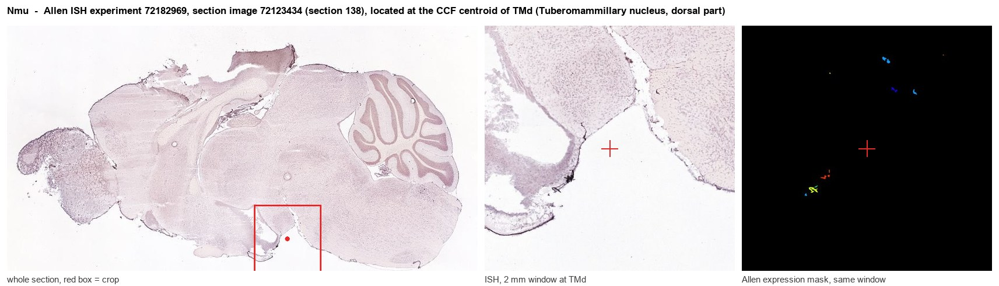
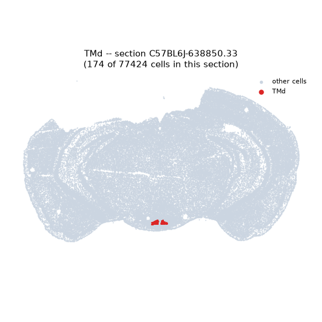
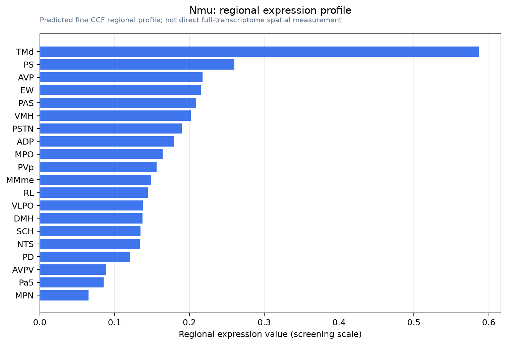

Nmu
Spatial tier: RESTRICTED · Class: OTHER · Top region: TMd (Tuberomammillary nucleus, dorsal part) · Positive regions: 16/554
50.0Discovery Score
40.1Targetability Score
CEvidence grade C
What this means: Nmu: fine CCF profile is restricted toward TMd (top regions: TMd, PS, AVP, EW, PAS; 16 positive regions); direct spatial validation is still required.
Function in TMd: evidence, prediction, innovation
- Gene function
- Nmu encodes neuromedin U, a highly conserved neuropeptide processed to NMU-8 and NMU-23. It acts on two Gq-coupled receptors: NMUR1, largely peripheral and immune, and NMUR2, which predominates in brain and especially hypothalamus. Centrally, neuromedin U suppresses food intake and raises body temperature, locomotor activity and HPA-axis output.
- Region function
- The dorsal tuberomammillary nucleus is part of the posterior hypothalamic histaminergic cell group, the brain's sole source of histamine; its neurons fire fastest during waking, fall silent in REM sleep, and stabilise arousal and attention.
- Published in this region
- inferred No region-specific literature found. Niimi 2001 showed that central neuromedin U activates neurons in the ventrobasal hypothalamus and brainstem, and Graham 2003 mapped Nmu and Nmur2 across mouse and rat hypothalamus and their regulation by nutritional status, placing the system in the arcuate, paraventricular and ventromedial axis rather than in the tuberomammillary histaminergic field; De Prins 2020 established that NMU-8 activates the HPA axis and stress responsiveness in mice.
- Predicted function
- Prediction: if neuromedin U is made by dorsal tuberomammillary neurons it would act as a co-transmitter released with histamine, reinforcing the wake-promoting, thermogenic and anorexigenic actions of the histaminergic system and giving it a direct line to the HPA axis. Intra-tuberomammillary NMU is predicted to increase wakefulness, body temperature and locomotion while reducing feeding; conditional Nmu deletion in Hdc-expressing neurons should blunt stress- and fasting-induced hyperactivity and the accompanying corticosterone rise, while leaving histamine synthesis and baseline sleep intact.
- Innovation
- ★★★★★ 5/5 Neuromedin U has never been examined as a histaminergic co-transmitter even though its central actions on arousal, temperature and feeding read like a description of the tuberomammillary nucleus.
- Tools
- Nmu and Nmur2 knockout mice; NMU-8 and NMU-23 peptides and NMUR2-preferring agonists; anti-NMU antibodies; histaminergic neurons targetable with Hdc-Cre (JAX 021198) and Hdc knockout mice.
- References
Direct evidence located at the region

Allen ISH experiment 72182969, section image 72123434 (section 138): the section that contains the CCF centroid of Tuberomammillary nucleus, dorsal part according to the Allen image-to-atlas alignment (reference_to_image), with a 2 mm window around that point. Left: whole section, red box = window. Middle: ISH signal. Right: Allen's expression-mask view of the same window. open this image in the Allen viewer
Look it up yourself: Allen Mouse Brain ISH for NmuAllen reference atlas: TMd (structure 1126)ABC Atlas MERFISH viewer(in the ABC Atlas choose dataset MERFISH-C57BL6J-638850-CCF, colour cells by gene "Nmu" or by parcellation_substructure "TMd")All genes confined to TMd + 3-D brain
Direct spatial evidence
MERFISH REGION LOCATOR

Regional expression figure

Predicted WMB × fine-CCF profile; not direct full-transcriptome spatial measurement.
Spatial profile
Evidence and specificity
- Evidence status
- PREDICTED_FINE
- Direct sources
- None; predicted localization only
- Exclusive threshold
- 12 positive regions out of 554
- Spatial specificity
- 0.398
- Top-region fraction
- 0.123
- Filter status
- PASS
Interpretation limits
- Cell-type-to-region projection is imputed expression, not direct spatial measurement.
- Adult reference atlases do not establish stability across age, sex, strain, state, or disease.
- Transcript abundance does not guarantee protein abundance or genetic-tool performance.